종자기사 (2019-08-04 기출문제)
1과목: 종자생산학
1. 화아유도에 필요한 조건으로 가장 적절하지 않은 것은?
- 저온
- MH
- 밤 시간의 길이
- 식물의 영양상태
(정답률: 85%)

2. 단명종자에 해당하는 것으로만 나열된 것은?
- 사탕무, 베치
- 메밀, 고추
- 가지, 수박
- 토마토, 접시꽃
(정답률: 68%)
3. 종자의 휴면타파에 사용하는 생장조절제로 가장 옳은 것은?
- 지베렐린
- ABA
- 2,4-D
- CCC
(정답률: 87%)
4. 벼 원원종 생산을 담당하는 기관으로 가장 적절한 곳은?
- 도 농업기술원
- 국립농업과학원
- 농산물원종장
- 종자공급소
(정답률: 74%)
5. 기본식물에서 유래된 종자를 무엇이라 하는가?
- 원종
- 원원종
- 보급종
- 장려품종
(정답률: 86%)
6. 다음 중 양성화에서 가장 늦게 발달하는 기관은?
- 꽃잎
- 수술
- 암술
- 악편
(정답률: 65%)
7. 다음 중 광발아성 종자는?
- 파
- 양파
- 담배
- 수박
(정답률: 74%)
8. 다음 중 일반적으로 작물의 화아분화 촉진에 가장 영향이 큰 것으로 나열된 것은?
- 온도, 일장
- 수분, 질소
- 온도, 토양수분
- 습도, 인산
(정답률: 89%)
9. 다음 중 종자발아에 필요한 수분흡수량이 가장 많은 것은?
- 호밀
- 콩
- 수수
- 벼
(정답률: 80%)
10. 다음 중 종자의 안전저장 요건으로 가장 적절한 것은?
- 고온 다습상태
- 고온 저습상태
- 저온 저습상태
- 저온 다습상태
(정답률: 81%)
11. 다음 중 단위결과가 가장 잘 되는 것은?
- 오이
- 수박
- 멜론
- 참외
(정답률: 69%)
12. 식물의 암 배우자(가), 수 배우자(나)를 순서대로 옳게 나타낸 것은?
- (가) : 배낭, (나) : 화분립
- (가) : 소포자, (나) : 주심
- (가) : 주피, (나) : 대포자
- (가) : 꽃밥, (나) : 반족세포
(정답률: 87%)
13. 종자의 테트라졸리움 검사의 목적은?
- 발아검사를 위하여
- 활력검사를 위하여
- 병리검사를 위하여
- 유전적 순도 검정을 위하여
(정답률: 79%)
14. 다음 중 발아세의 정의로 가장 적절한 것은?
- 파종된 총 종자개체수에 대한 발아종자 개체수의 비율
- 파종기부터 발아기까지의 일수
- 종자의 대부분이 발아한 날
- 치상 후 일정 기간까지의 발아율
(정답률: 78%)
15. 다음 중 종자의 모양이 방패형인 것은?
- 벼
- 은행나무
- 목화
- 양파
(정답률: 69%)
16. 채종재배에서 화곡류의 일반적인 수확적기로 가장 옳은 것은?
- 황숙기
- 유숙기
- 갈숙기
- 고숙기
(정답률: 84%)
17. 다음 중 종자의 구조에서 모체의 일부인 것으로 가장 옳은 것은?
- 배
- 종피
- 배젖
- 책상조직
(정답률: 66%)
18. 다음 중 수정과정에 대한 설명으로 가장 적절하지 않은 것은?
- 속씨식물은 대개의 경우 배우자핵이 이중결합을 한다.
- 2개의 웅핵 중에서 하나는 2배체의 극핵과 결합하여 3배체의 배유핵이 된다.
- 화분립이 주두에 닿기 전에 발아하고 화분관이 신장하여 암술대를 거쳐 배낭 속으로 들어간다.
- 자성배우자와 웅성배우자가 완전히 성숙햇을 때 가능하다.
(정답률: 75%)
19. 춘화처리를 실시하는 이유로 가장 옳은 것은?
- 휴면타파
- 발아촉진
- 생장억제
- 화성유도
(정답률: 78%)
20. 저장 중 종자가 발아력을 상실하는 원인으로 가장 거리가 먼 것은?
- 효소의 활력 저하
- 원형질단백의 응고
- 수분함량의 감소
- 저장양분의 소모
(정답률: 54%)
2과목: 식물육종학
21. 배낭모세포가 감수분열하여 형성한 대포자 중 살아남은 배낭세포는 8개의 핵을 갖는다. 이들의 기능으로 가장 옳은 것은?
- 난핵,조세포핵, 그리고 반족세포핵은 수정과 동시에 퇴화한다.
- 조세포핵과 극핵은 수정과 함께 융합하여 배유를 형성한다.
- 난핵은 정세포핵과 융합하여 배를 형성한다.
- 난핵과 극핵이 융합하여 다음 세대의 뿌리조직을 형성한다.
(정답률: 72%)
22. 반복친과 여러번 교잡하면서 선발 고정하는 육종법은?
- 계통육종법
- 여교잡육종법
- 혼합육종법
- 파생계통육종법
(정답률: 84%)
23. 생식세포 돌연변이와 체세포 돌연변이의 예로 가장 옳은 것은?
- 생식세포 돌연변이 : 염색체의 상호전좌,
체세포 돌연변이 : 아조변이 - 생식세포 돌연변이 : 아조변이,
체세포 돌연변이 : 열성돌연변이 - 생식세포 돌연변이 : 열성돌연변이,
체세포 돌연변이 : 우성돌연변이 - 생식세포 돌연변이 : 우성돌연변이,
체세포 돌연변이 : 염색체의 상호 전좌
(정답률: 72%)
24. 체세포 염색체수가 20인 2배체 식물군의 연관군 수는?
- 20
- 12
- 10
- 2
(정답률: 80%)
25. 재래종 또는 지방종에 대한 설명으로 옳지 않은 것은?
- 하나의 품종으로 보아도 좋다.
- 작물의 원산지에서 오랜 기간 자생 또는 재배되어 온 것이어야만 한다.
- 대부분의 재래종은 일종의 고정종에 속하는 것이다.
- 한 지역에서 예로부터 재배되어 내려 온 것을 흔히 일컫는다.
(정답률: 54%)
26. 배낭에서 난세포 이외의 조세포나 반족세포의 핵이 단독으로 발육하여 배를 형성하는생식은?
- 처녀생식
- 무핵란생식
- 무배생식
- 주심배생식
(정답률: 59%)
27. 잡종강세 표현에 대한 설명으로 가장 적절하지 않은 것은?
- 외계의 불량 환경에 대한 저항성이 강하다.
- 영양체의 생장이 왕성하다.
- 개화 및 생장이 촉진된다.
- 임성이 저하된다.
(정답률: 73%)
28. 돌연변이육종에 고려해야 할 사항으로 가장 적절하지 않은 것은?
- 현실적인 육종규모를 설정한다.
- 주로 양적 형질을 육종목표로 설정한다.
- 효과적인 돌연변이 유발원을 선택한다.
- M1 및 그 이후 세대의 효율적 육종방법을 설정한다.
(정답률: 79%)
29. 신품종의 특성을 유지하는데 문제가 되는 품종의 퇴화 원인으로 가장 적절하지 않은 것은?
- 근교 약세에 의한 퇴화
- 기계적 혼입에 의한 퇴화
- 주동 유전자의 분리에 의한 퇴화
- 자연 교잡에 의한 퇴화
(정답률: 54%)
30. 인공교배를 할 때 고려해야 할 사항으로 가장 적절하지 않은 것은?
- 교배친의 조만성이 다를 경우 만생종을 일찍 파종한다.
- 자가수정 작물은 모본(종자친)에 제웅을 한다.
- 추파성인 밀과 보리는 저온처리로 추파성을 소거해야 한다.
- 벼는 장일처리를 하여 개화를 촉진시킨다.
(정답률: 62%)
31. 작은 섬이나 산골짜기가 타식성 작물의 채종장소로 많이 이용되고 있는 이유로 가장 적절한 것은?
- 여러 가지 품종과의 자연교잡을 막을 수 있기 때문이다.
- 여러 가지 품종과의 자연 교잡이 자유롭게 일어날 수 있기 때문이다.
- 습고가 알맞기 때문이다.
- 온도가 알맞기 때문이다.
(정답률: 78%)
32. 교배모본 선정 시 고려할 사항으로 가장 적절하지 않은 것은?
- 가능한 결점이 적은 품종을 선정한다.
- 과거에 이용실적이 적은 품종을 선정한다.
- 대상지역의 주요품종을 교배친으로 선정한다.
- 목표형질 이외의 양친의 유전조성이 유사한 품종을 선정한다.
(정답률: 75%)
33. 다음 중 일염색체식물인 것은?
- 2n+2
- 2n+1
- 2n-1
- 2n
(정답률: 79%)
34. 자가불화합성을 지닌 작물에 있어서 불화합성을 타파하여 자식종자를 생산할 수 있는 방법으로 가장 적절하지 않은 것은?
- 뇌수분
- 일장처리
- 탄산가스처리
- 고온처리
(정답률: 60%)
35. 자웅동주이면서 웅예선숙인 작물로만 나열된 것은?
- 옥수수, 딸기
- 아스파라거스, 양파
- 시금치, 벼
- 시금치, 양파
(정답률: 53%)
36. 다음 중 유전자의 지배가가 누적적인 유전자에 해당하는 것은?
- 중복유전자
- 복수유전자
- 보족유전자
- 억제유전자
(정답률: 56%)
37. 영양계 분리법과 가장 관련이 없는 것은?
- 과수류나 뽕나무 같은 영년생 식물에 이용한다.
- 양딸기의 자연집단에서 우량한 영양체를 분리하는데 이용한다.
- 영양이 좋은 종자를 선발 분리하는 방법이다.
- 재래 집단이나 자연집단에는 많은 변이체를 가지고 있다.
(정답률: 51%)
38. 다음 중 육종목표로 가장 적절하지 않은 것은?
- 기존에 없던 새로운 식물을 창조하는 것
- 유용한 형질을 결합시켜 유용성을 높이는 것
- 환경스트레스에 대한 저항성 증진
- 시장 유통에 적합한 특성 증진
(정답률: 75%)
39. 다음 중 복교잡을 나타낸 것으로 가장 옳은 것은?
- A×B의 F1에 B를 교잡
- (A×B)×(C×D)
- (A×B)×C
- A×B
(정답률: 76%)
40. 다음 중 Brassica napus의 염색체의 수와 게놈으로 가장 적절한 것은?
- 2n = 28, AABB
- 2n = 30, AABBCC
- 2n = 32, AABBDD
- 2n = 38, AACC
(정답률: 44%)
3과목: 재배원론
41. 토마토, 당근에 해당하는 일장형은?
- 단일식물
- 장일식물
- 중성식물
- 장단일식물
(정답률: 67%)
42. 화곡류의 생육 단계 중 한발해에 가장 약한 시기는?
- 유숙기
- 출수개화기
- 감수분열기
- 유수형성기
(정답률: 56%)
43. C4작물에 대한 설명으로 가장 거리가 먼 것은?
- 광 포화점이 높다.
- 광 호흡률이 높다.
- 광 보상점이 낮다.
- 광합성효율이 높다.
(정답률: 61%)
44. 녹체춘화형 식물인 것으로만 나열된 것은?
- 잠두, 무
- 추파맥류, 코스모스
- 완두, 벼
- 양배추, 양파
(정답률: 62%)
45. 다음 중 윤작에 대한 설명으로 옳지 않은 것은?
- 동양에서 발달한 작부방식이다.
- 지력유지를 위하여 콩과 작물을 반드시 포함한다.
- 병충해 경감 효과가 있다.
- 경지이용률을 높일 수 있다.
(정답률: 63%)
46. 단풍나무의 휴면을 유도, 위조 저항성, 한해 저항성, 휴면아 형성 등과 관련 있는 호르몬으로 가장 옳은 것은?
- 옥신
- 지베렐린
- 시토키닌
- ABA
(정답률: 67%)
47. 다음 중 인과류로만 나열되어 있는 것은?
- 사과, 배
- 무화과, 딸기
- 복숭아, 앵두
- 감, 밤
(정답률: 75%)
48. 논에 심층시비를 하는 효과에 대한 설명으로 가장 옳은 것은?
- 질산태 질소비료를 논 토양의 환원층에 주어 탈질을 막는다.
- 질산태 질소비료를 논 토양의 산화층에 주어 용탈을 막는다.
- 암모니아태 질소비료를 논 토양의 환원층에 주어 탈질을 막는다.
- 암모니아태 질소비료를 논 토양의 산화층에 주어 용탈을 막는다.
(정답률: 62%)
49. 벼의 관수해(冠水害)에 대한 설명으로 가장 옳은 것은?
- 출수개화기에 약하다.
- 관수상태에서 벼의 잎은 도장이 억제될 수 있다.
- 수온과 기온이 높으면 피해가 적다.
- 청수보다 탁수에서 피해가 적다.
(정답률: 63%)
50. 사료작물을 혼파 재배할 때 가장 불편한 것은?
- 채종이 어려움
- 건초제조가 어려움
- 잡초방제가 어려움
- 병해충방제가 어려움
(정답률: 64%)
51. 작부방식의 변천과정으로 가장 적절한 것은?
- 이동경작 → 3포식농법 → 개량3포식농법 → 자유작
- 자유작 → 이동경작 → 휴한농법 → 개량3포식농법
- 이동경작 → 개량3포식농법 → 자유작 → 3포식농법
- 자유작 → 휴한농법 → 개량3포식농법 → 이동경작
(정답률: 63%)
52. 질소를 10a 당 9.2kg 시용하고자 할 때, 기비 40%의 요소 필요량은?
- 약 4kg
- 약 8kg
- 약 12kg
- 약 16kg
(정답률: 37%)
53. 작물의 도복에 대한 설명으로 가장 거리가 먼 것은?
- 맥류의 경우 절간신장이 시작된 이후의 토입은 도복을 크게 경감시킨다.
- 밀식하면 통풍 및 통광이 저해되어 경엽이 연약해지고 부리의 발달도 불량해지므로 도복이 심해진다.
- 질소 시비량을 증가시키면 도복이 억제된다.
- 맥류의 경우 이식재배를 한 것은 직파재배한 것보다 도복을 경감시킨다.
(정답률: 74%)
54. 다음 중 적산온도에 대한 설명으로 가장 적합한 것은?
- 작물생육기간 중 0℃ 이상의 일평균기온을 합산한 온도
- 작물생육의 최적온도를 생육일수로 곱한 온도
- 작물생육기간 중 일최고기온을 합산한 온도
- 작물생육기간 중 일최저기온을 합산한 온도
(정답률: 71%)
55. 우리나라 작물재배의 특색에 대한 설명으로 가장 적절하지 않은 것은?
- 토양비옥도가 낮음
- 전체적인 식량자급률이 높음
- 경영규모가 영세함
- 농산물의 국제 경쟁력이 약함
(정답률: 72%)
56. 토양 공극과 용기량과의 관계를 가장 올바르게 설명한 것은?
- 모관 공극이 많으면 용기량은 증대된다.
- 공극과 용기량은 관계가 없다.
- 비모관 공극이 많으면 용기량은 증대된다.
- 비모관 공극이 적으면 용기량은 증대된다.
(정답률: 59%)
57. 다음 중 요수량이 가장 큰 작물은?
- 옥수수
- 기장
- 수수
- 호박
(정답률: 58%)
58. 세포분열을 촉진하는 활성물질로 잎의 노화를 방지하며 저장 중의 신선도를 유지해주는 것으로 가장 옳은 것은?
- 옥신
- 시토키닌
- 지베렐린
- ABA
(정답률: 61%)
59. 포도 등의 착색에 관계하는 안토시안의 생성을 가장 조장하는 광파장은?
- 적외선
- 녹색광
- 자외선
- 적색광
(정답률: 49%)
60. 세포벽의 가소성을 증대시켜 세포의 신장을 유발하는 것으로 가장 옳은 것은?
- Auxin
- CCC
- Cytokinin
- Ethylene
(정답률: 59%)
4과목: 식물보호학
61. 다음 설명에 해당하는 식물병원균은?
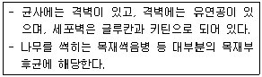
- 난균
- 담자균
- 접합균
- 고생군류
(정답률: 61%)
62. 미생물의 독소를 이용하여 해충을 방제하는 생물 농약은?
- 지베렐린
- 불임화제
- 석회보르도액
- Bt(Bacillus thuringiensis)제
(정답률: 82%)
63. 생태적 잡초 방제 방법에 해당하는 것은?
- 피복작물을 이용하는 방법
- 열을 이용해 소각, 소토하는 방법
- 새로운 잡초종의 침입과 오염을 막는 방법
- 곤충, 가축, 미생물 등의 생물을 이용하는 방법
(정답률: 50%)
64. 물리적 잡초 방제 방법에 속하지 않는 것은?
- 경운
- 비닐 피복
- 작물 윤작
- 침수 처리
(정답률: 71%)
65. 곤충의 피부를 구성하는 부분이 아닌 것은?
- 융기
- 큐티클
- 기저막
- 표피세포
(정답률: 65%)
66. 유충(또는 약충)과 성충이 모두 식물의 즙액을 빨아 먹어 피해를 주는 해충은?
- 멸구류
- 나방류
- 하늘소류
- 좀벌레류
(정답률: 61%)
67. 다음 설명에 해당하는 식물병은?
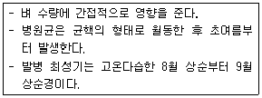
- 벼 잎집얼록병
- 벼 흰잎마름병
- 벼 줄무늬잎마름병
- 벼 검은줄무늬오갈병
(정답률: 40%)
68. 해충의 농약 저항성에 대한 설명으로 옳지 않은 것은?
- 동일 기작을 가진 계통의 약제를 연속하여 사용하지 않는다.
- 진딧물이나 응애류처럼 생활사가 짧을수록 저항성은 더 늦게 발달된다.
- 방제 효과를 올리기 위해서약제 사용량을 계속해서 늘리면서 발생하는 현상이다.
- 약제에 대한 감수성종이 죽고 유전적으로 저항성을 가진 해충이 살아남아 저항성개체가 우점종이 되는 것을 의미한다.
(정답률: 79%)
69. 배추 무사마귀병 방제 방법으로 옳지 않은 것은?
- 토양 소독
- 토양 산도 교정
- 양배추 윤작 재배
- 저항성 품종 재배
(정답률: 68%)
70. 해충의 방제 방법 분류 중 성격이 다른 것은?
- 윤작
- 혼작
- 온도 처리
- 재배밀도 조절
(정답률: 76%)
71. 토양 훈증제를 이용한 토양 소독 방법에 대한 설명으로 옳지 않은 것은?
- 효과가 크다.
- 비용이 많이 든다.
- 화학적 방제의 일종이다.
- 식물병에 선택적으로 작용한다.
(정답률: 74%)
72. 식물병해충의 종합적 방제 방법에 대한 설명으로 옳은 것은?
- 한 지역에서 동시에 방제하는 방법이다.
- 여러 가지 병해충을 동시에 방제하는 방법이다.
- 여러 가지 농약을 동시에 사용하여 방제하는 방법이다.
- 여러 가지 가능한 방제 수단을 사용하여 방제하는 방법이다.
(정답률: 75%)
73. 유충기에 수확된 밤이나 밤송이 속으로 파먹어 들어가 많은 피해를 주는 해충은?
- 복숭아명나방
- 복숭아혹진딧물
- 복숭아심식나방
- 복숭아유리나방
(정답률: 45%)
74. 다년생 잡초로만 올바르게 나열한 것은?
- 가래, 쇠비름
- 벗풀, 뚝새풀
- 올방개, 바랭이
- 질경이, 나도겨풀
(정답률: 41%)
75. 광엽 잡초로만 올바르게 나열한 것은?
- 강피, 바랭이
- 냉이, 개비름
- 메꽃, 강아지풀
- 뚝새풀, 나도방동사니
(정답률: 52%)
76. 다음 설명에 해당하는 식물병원은?
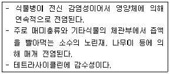
- 세균
- 진균
- 바이러스
- 파이토플라스마
(정답률: 70%)
77. 살포액 20L에 농약 20g을 넣었을 때 희석배수는?
- 100배
- 500배
- 1000배
- 2000배
(정답률: 77%)
78. 나비목 해충이 알에서 부화한 후 3번 탈피하였을 때 유충의 영기는?
- 2령충
- 3령충
- 4령충
- 5령충
(정답률: 73%)
79. 보르도액은 어떤 종류의 약제인가?
- 종자소독제
- 보호살균제
- 농용항생제
- 화학불임제
(정답률: 70%)
80. 주로 밭에서 발생하는 잡초는?
- 가래, 마디꽃
- 반하, 쇠비름
- 억새, 개구리밥
- 올방개, 너도방동사니
(정답률: 61%)
5과목: 종자관련법규
81. ( )에 가장 적절한 내용은?
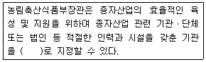
- 농업재단산업센터
- 종자산업진흥센터
- 기술보급종자센터
- 스마트농업센터
(정답률: 74%)
82. 식물신품종 보호법상 심판에 대한 내용이다. ( 가 )에 가장 적절한 내용은?
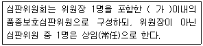
- 5명
- 8명
- 9명
- 12명
(정답률: 69%)
83. 품종보호권에 대한 내용이다. ( )에 가장 적절한 내용은? (단, “재정의 청구는 해당 보호품종의 품종보호권자 또는 전용실시권자와 통상실시권 허락에 관한 협의를 할 수 없거나 협의 결과 합의가 이루어지지 아니한 경우에만 할 수 있다.”를 포함한다.)
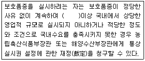
- 6개월
- 1년
- 2년
- 3년
(정답률: 27%)
84. 품종보호료 및 품종보호 등록 등에 대한 내용이다. ( )에 가장 적절한 내용은?
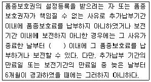
- 5일
- 7일
- 14일
- 21일
(정답률: 65%)
85. 종자 및 묘의 유통 관리에서 시장ㆍ군수ㆍ구청장은 종자업자가 종자업 등록을 한 날부터 1년 이내에 사업을 시작하지 아니하거나 정당한 사유 없이 1년 이상 계속하여 휴업한 경우 종자업 등록을 취소하거나 몇 개월 이내의 기간을 정하여 영업의 전부 또는 일부의 정지를 명할 수 있는가?
- 3개월
- 6개월
- 9개월
- 12개월
(정답률: 67%)
86. ( )에 알맞은 내용은?
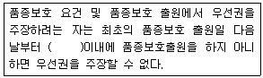
- 1년
- 9개월
- 6개월
- 3개월
(정답률: 63%)
87. 종자산업법상 종자 및 묘의 검정결과에 대하여 거짓광고나 과대광고를 한 자는 어떤 벌칙은 받는가?
- 6개월 이하의 징역 또는 3백만원 이하의 벌금
- 6개월 이하의 징역 또는 5백만원 이하의 벌금
- 1년 이하의 징역 또는 5백만원 이하의 벌금
- 1년 이하의 징역 또는 1천만원 이하의 벌금
(정답률: 74%)
88. ( )에 가장 적절한 내용은?
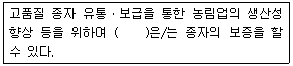
- 종자관리사
- 농업대학 교수
- 농업관련 연구원
- 농업마이스터 교사
(정답률: 82%)
89. 식물신품종 보호법상 보칙에서 “종자위원회는 필요한 경우 당사자나 그 대리인 또는 이해관계인에게 출석을 요구하거나 관계서류의 제출을 요구할 수 있다.”에 따라 당사자나 그 대리인 또는 이해관계인의 출석을 요구하거나 필요한 관계 서류를 요구하는 경우에는 회의 개최일 며칠 전까지 서면으로 하여야 하는가?
- 3일
- 5일
- 7일
- 14일
(정답률: 50%)
90. 종자검사요령상 수분의 측정에서 저온항온건조기법을 사용하게 되는 종으로만 나열된 것은?
- 상추, 시금치
- 조, 참외
- 보리, 호밀
- 유채, 고추
(정답률: 62%)
91. 종자산업의 기반 조성에 대한 내용이다. ( )에 가장 적절한 내용은?
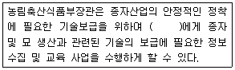
- 식품의약품안전처장
- 농촌진흥청장
- 환경부장관
- 지방자치단체의 장
(정답률: 56%)
92. 종자관리요강상 겉보기, 쌀보리 및 맥주보리의 포장검사에 대한 내용이다. ( 가 )에 가장 적절한 내용은?
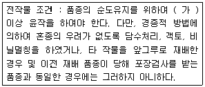
- 1년
- 2년
- 3년
- 5년
(정답률: 57%)
93. 식물신품종 보호법상 품종의 명칭에서 품종명칭등록 이의신청을 한 자는 품종명칭등록이의신청기간이 경과한 후 며칠 이내에 품종명칭등록 이의신청서에 적은 이유 또는 증거를 보정할 수 있는가?
- 7일
- 14일
- 21일
- 30일
(정답률: 56%)
94. ( )에 알맞은 내용은?
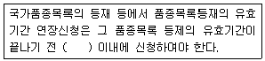
- 3개월
- 6개월
- 1년
- 2년
(정답률: 68%)
95. 종자관리요강상 수입적응성시험의 대상작물 및 실시기관에서 국립산림품종관리센터의 대상작물로만 나열된 것은?
- 곽향, 당귀
- 백출, 사삼
- 작약, 지황
- 느타리, 영지
(정답률: 52%)
96. 종자의 보증에서 국가보증이나 자체보증을 받은 종자를 생산하려는 자는 농림축산식품부장관으로부터 채종 단계별로 몇 회 이상 포장(圃場)검사를 받아야 하는가?
- 1회
- 3회
- 5회
- 7회
(정답률: 78%)
97. 품종보호료 및 품종보호 등록 등에 대한 내용 중 ( )에 가장 적절한 내용은?
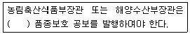
- 3개월 마다
- 6개월 마다
- 1년 마다
- 매월
(정답률: 56%)
98. 종자검사요령상 포장검사 병주 판정기준에서 벼의 특정병에 해당하는 것은?
- 이삭도열병
- 키다리병
- 깨씨무늬병
- 이삭누룩병
(정답률: 75%)
99. 종자관리요강상 규격묘의 규격기준에서 과수묘목 중 배 묘목의 길이(cm)로 가장 옳은 것은? (단, 묘목의 길이는 지제부에서 묘목선단까지의 길이이다.)
- 50cm 이상
- 70cm 이상
- 100cm 이상
- 120cm 이상
(정답률: 51%)
100. 종자산업법상 종합계획에 대한 내용이다. ( )에 알맞은 내용은?
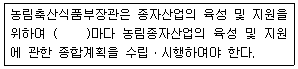
- 6개월
- 1년
- 3년
- 5년
(정답률: 71%)